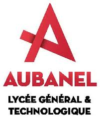
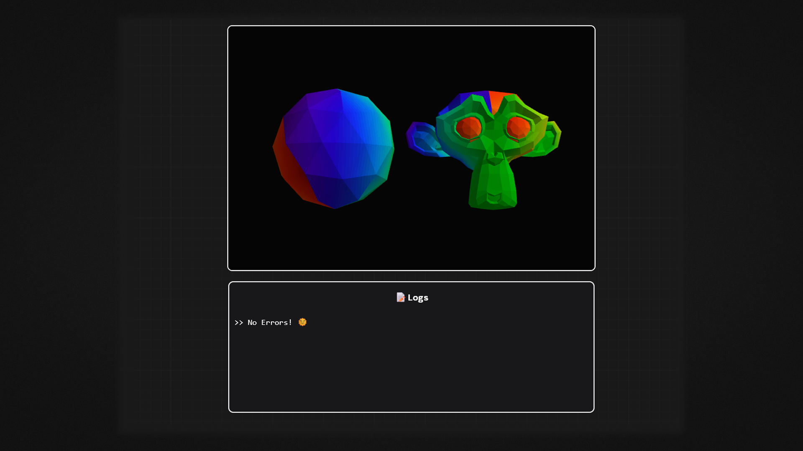
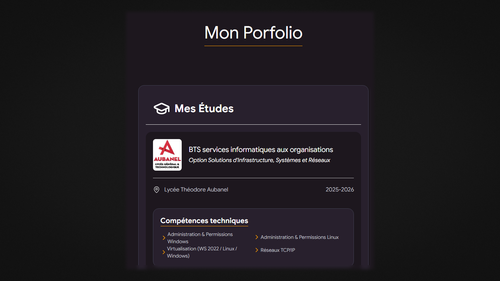
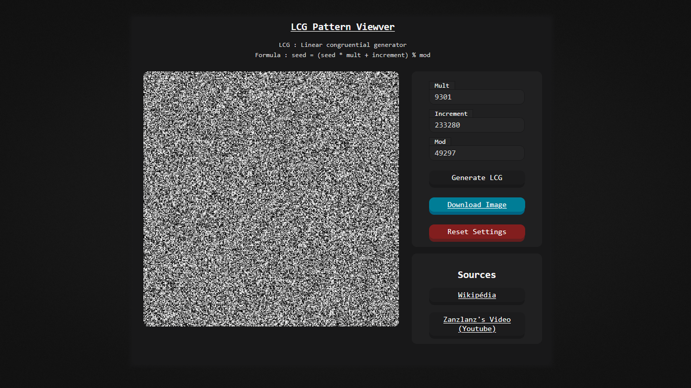
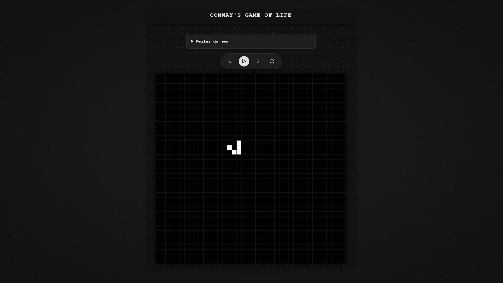
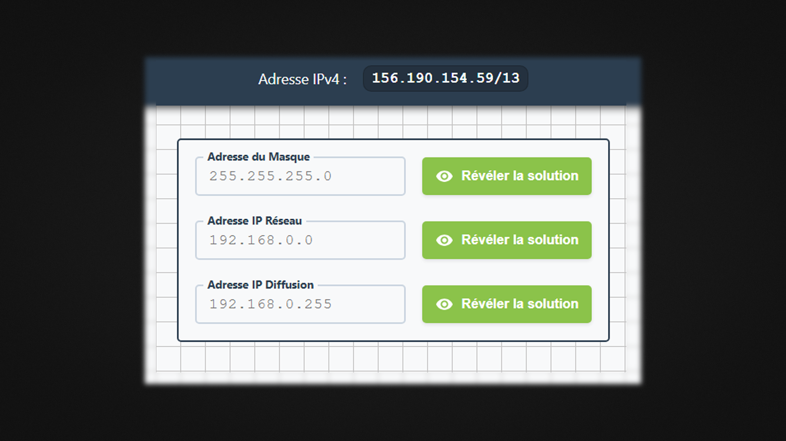
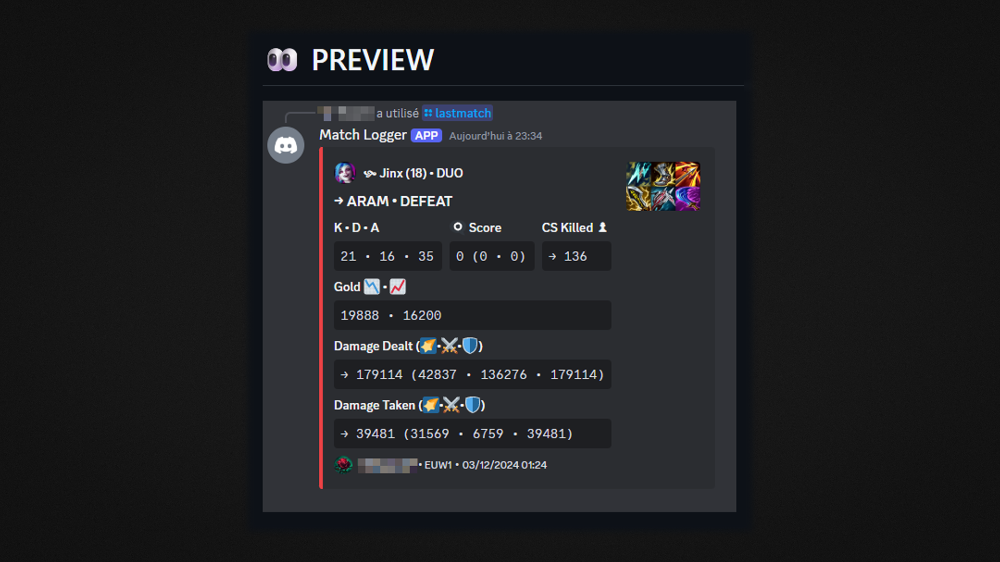

Mes Études

BTS services informatiques aux organisations
Option Solutions d'Infrastructure, Systèmes et Réseaux
Lycée Théodore Aubanel
2025-2026
Compétences techniques
Administration & Permissions Windows
Virtualisation (WS 2022 / Linux / Windows)
Administration & Permissions Linux
Réseaux TCP/IP
Services et sécurité
Active Directory (AD)
Pare-feu & VLAN
DNS
DHCP
Mes Projets Personnels
WEBGL
Ce projet personnel a été réalisé dans le but d'apprendre à utiliser l'API graphique WebGL avec TypeScript.
De plus, le projet est compilé à l'aide de webpack.
Enfin, afin de maîtriser les concepts de vecteurs et de matrices, aucune bibliothèque publique n'a été utilisée.
En effet, l'ensemble des classes mathématiques a été développé manuellement dans un objectif d'apprentissage.

PORTFOLIO
Ce projet a pour but de créer un portfolio personnel.
Il utilise pour son aspect visuel (Frontend) : Tailwind CSS, Basecoat et GSAP.
Pour finir, Vite est utilisé pour construire les différents fichiers CSS et JavaScript.

GENERATEUR A
CONGRUENT LINEAIRE
Ce projet personnel a pour but de créer un visualiseur d'aléatoire basé sur les nombres générés par un Générateur à congruence linéaire (LCG). En effet, cet algorithme est très connu dans la génération de nombres pseudo-aléatoires et était présent dans certaines versions de PHP. Malheureusement, celui-ci n'est pas considéré comme sécurisé cryptographiquement étant donné qu'une de ses variables utilise la génération précédente.

GAME OF LIFE
Ce projet personnel est une recréation du « Jeu de la vie », en JavaScript, en utilisant la bibliothèque graphique p5.js.

ENTRAINEMENT DECOUPAGE IPV4
Un petit site web pour s'entraîner au découpage d'adresses IPv4.

MATCH LOGGER V2
Ancien projet personnel dont l'objectif était de créer un bot Discord permettant d'afficher les statistiques d'un joueur sur sa dernière partie de League of Legends. Ce projet utilise l'API Riot Games, ainsi que JavaScript avec la bibliothèque discordjs pour l'envoi d'embeds sur Discord.
